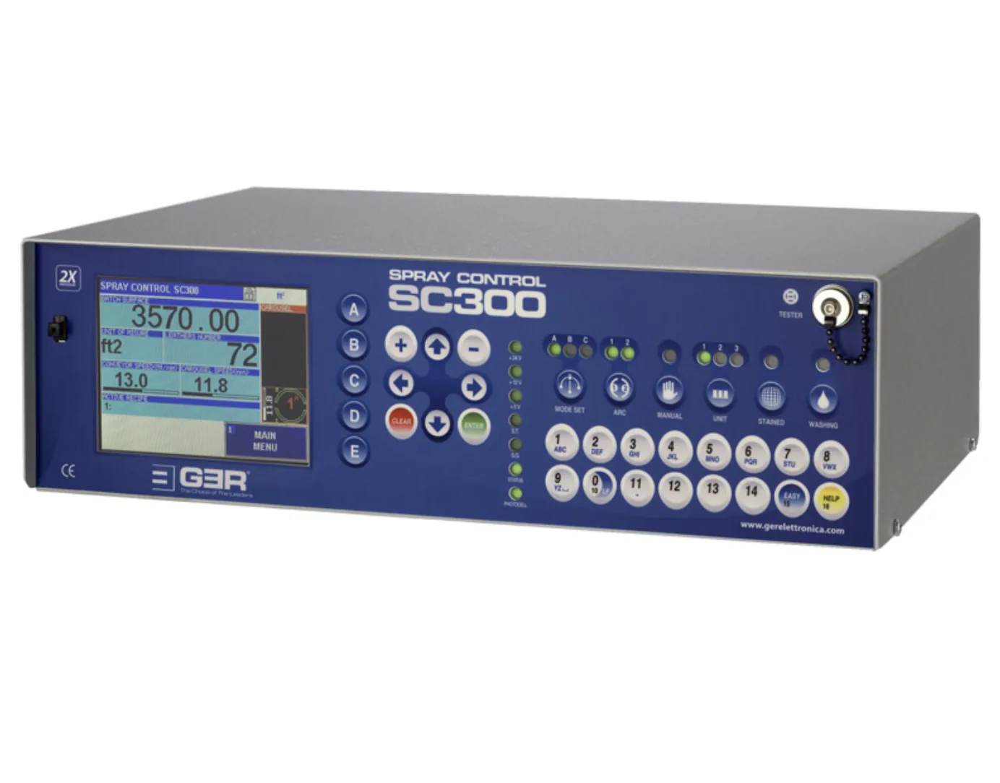
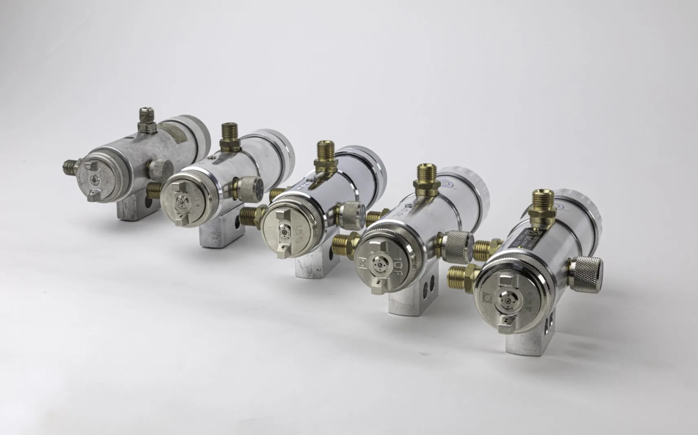
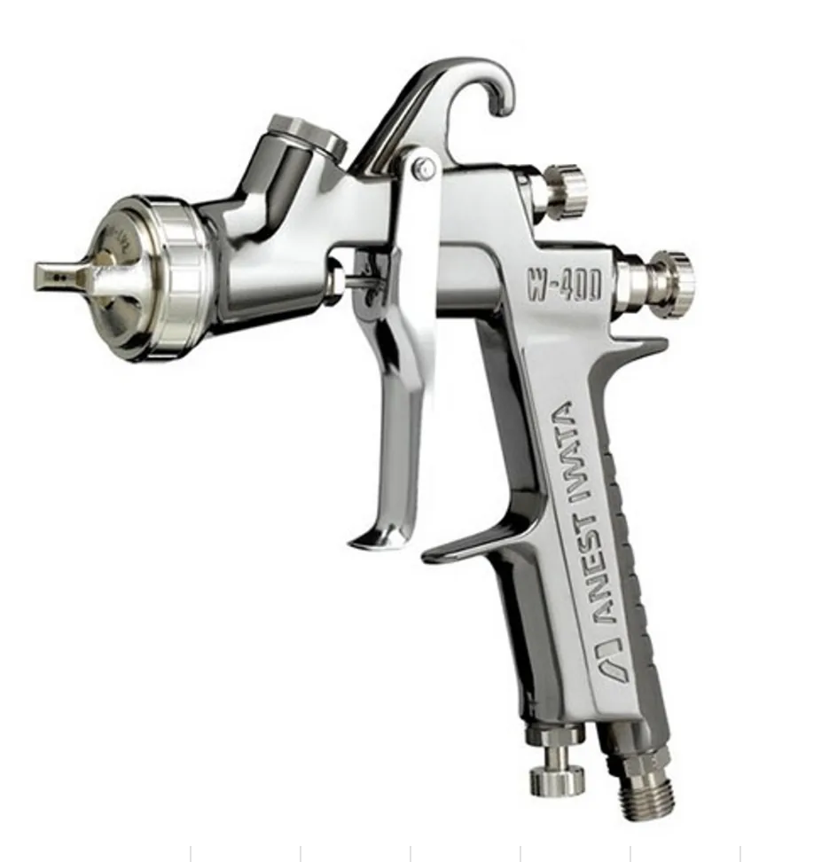
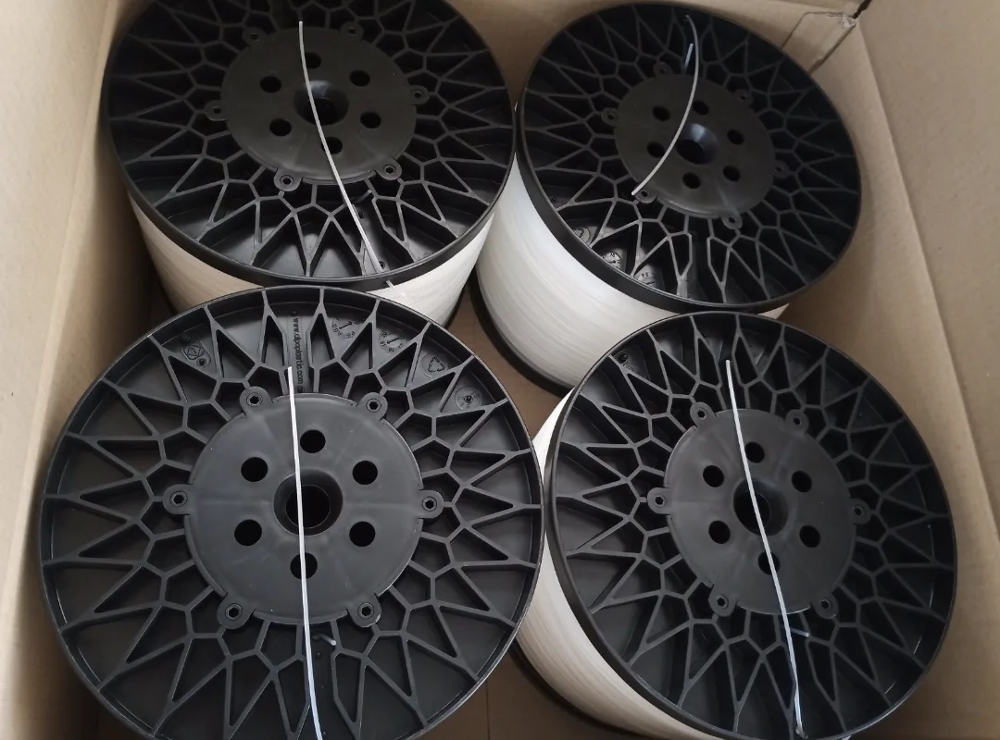
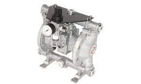
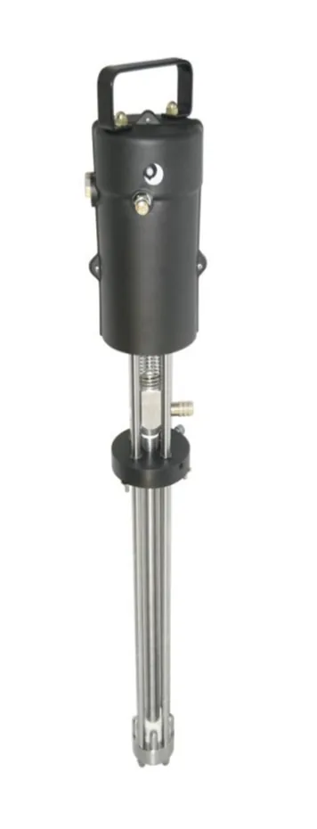

Spray Line
Spare Parts
Spare parts and consumables for leather finishing spray lines — economizers, automatic and manual spray guns, perlon belts, diaphragm and piston pumps and dynamic pulsation dampeners. Sourced for your machine and quality-checked before they ship.

Reduce Downtime
Keep spray guns, pump kits, perlon belt and dampeners on the shelf. When a gun clogs or a pump loses pressure, swap the part and your finishing line is back in production in minutes, not days.
Save Finish, Cut Waste
Economizers spray only over the hide and well-maintained guns and pumps atomise cleanly — so you use less dye and lacquer, keep the booth cleaner and protect your finishing margin.
Matched To Your Machine
Guns, pumps, belts, economizers and dampeners identified against your exact brand and model — original and compatible, with no minimum order quantity.
Spare Parts for
Leather Spray Finishing
Kymera Group supplies spare parts and consumables for the finishing spray lines used in tanneries to apply dyes, lacquers and finishes to leather. The hides travel through a spray booth on a perlon conveyor belt while automatic guns on a reciprocating arm atomise the product evenly; economizers switch the guns on only over the leather to cut overspray, and pumps feed the finish under steady pressure.
From the guns, economizers, perlon belt and the diaphragm and piston pumps to the dynamic pulsation dampener that keeps the spray fan uniform, we source the right component for your specific machine. Tell us your brand and model, and we'll match the part, confirm the specification and quote it for you.

The Complete
Spray Line Catalogue
From economizers and spray guns to perlon belts, pumps and pulsation dampeners — everything your finishing line needs, matched to your brand and model and quality-checked before dispatch.
Economizers
Switch the spray guns on only over the hide, cutting overspray and finish consumption while keeping coverage even across every skin — lower product cost, cleaner booth.
Request a Quote
Automatic & HVLP Guns
Standard and HVLP guns mounted on the reciprocating arm — atomise dyes, lacquers and finishes evenly at production speed. Guns and spare parts (nozzles, needles, seals) for Aircom, DeVilbiss, Anest Iwata, Spraycolor, Krautzberger, Ecco and Wagner.
Request a Quote
Manual Spray Gun
For touch-ups, sample work and small batches — the same atomisation quality as the automatic guns, hand-held for finishing flexibility on every type of article.
Request a Quote
Perlon Belt
The open synthetic conveyor belt that carries the hides through the spray booth and lets overspray fall away to the filtration below. A periodic wear item.
Request a Quote
Diaphragm Pump
Feeds dyes, lacquers and finishes to the spray guns under steady pressure — gentle on the product, reliable, and easy to clean between colours.
Request a Quote
Piston Pump
For higher-pressure and higher-viscosity finishing products — delivers a constant flow to the guns for consistent atomisation across the whole line.
Request a QuoteDynamic Pulsation Dampener
Smooths the pressure pulses from the pump so the spray fan stays uniform — no banding or pulsing in the finish, for an even coat every pass.
Request a QuoteSpray Finishing, Step by Step
The finishing spray line applies dye, lacquer or finish evenly across the leather and dries it, ready for the next coat. The hide is conveyed, sprayed, fed under pressure and dried — here is the cycle on the production floor.
Load & Convey
Hides are laid on the perlon conveyor belt and carried into the spray booth at a constant, controlled speed.
Detect & Spray
The economizer switches the automatic guns on only over the leather, so the reciprocating arm sprays an even coat with minimal overspray.
Pump & Atomize
Diaphragm or piston pumps feed the finish under steady pressure, with the dampener smoothing pulses so the spray fan stays uniform.
Dry & Stack
The coated hide passes on to drying and stacking — finish fixed and even, ready for the next coat or the next operation.
See It In Action
Spray guns, economizers and pumps — at work on a real leather finishing line.
Your Questions,
Answered
How does a leather finishing spray line work?
The hides are carried through a spray booth on a perlon conveyor belt. Automatic guns on a reciprocating arm atomise dyes, lacquers or finishes onto the leather while pumps feed the product under steady pressure. Photocell-driven economizers switch the guns on only over the hide to cut overspray. The finished leather then passes to drying and stacking.
What is an economizer on a spray line?
An economizer detects the position of each hide on the belt and switches the spray guns on only when there is leather beneath them. This stops the guns spraying into the gaps, significantly reducing overspray and finish consumption while keeping coverage even across every skin.
What is the difference between automatic and manual spray guns?
Automatic guns (including HVLP) are mounted on the reciprocating arm and spray continuously at production speed for even, repeatable coverage. Manual guns are hand-held for touch-ups, samples and small batches. We supply both — plus their nozzles, needles and seals — for spray gun brands including Aircom, DeVilbiss, Anest Iwata, Spraycolor, Krautzberger, Ecco and Wagner.
What is the perlon belt used for?
The perlon belt is the open synthetic conveyor belt that carries the hides through the spray booth. Its open structure lets overspray fall through to the filtration and water curtain below, keeping the leather supported while the booth stays clean. It is a wear item replaced periodically.
Do you supply diaphragm pumps, piston pumps and pulsation dampeners?
Yes. Diaphragm pumps suit most dyes and finishes and are easy to clean between colours; piston pumps handle higher pressures and more viscous products. The dynamic pulsation dampener smooths the pressure pulses from the pump so the spray fan stays uniform with no banding.
Which spray line brands do your spare parts fit, and is there a minimum order?
Our parts are compatible with the most widespread brands, including Cartigliano, Barnini, Todesco, Gemata, El.Pa, Spraytech, Ohligs and Vallero. There is no minimum order quantity — a single gun, one set of seals or a complete consumables package, supplied with the same care.
Send Your Request
Tell us your spray line brand and model, the part you need and the quantity — we'll come back to you with the right component, the right price, and a clear lead time.